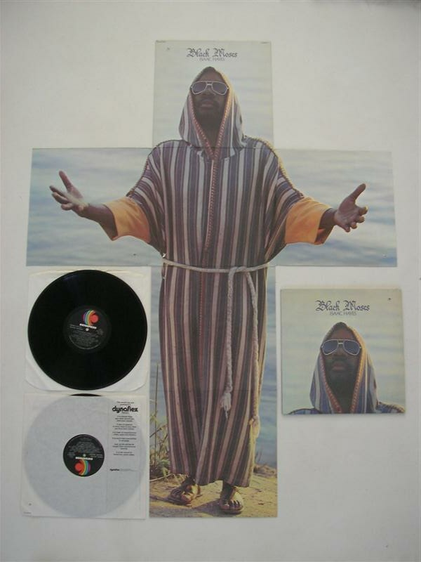
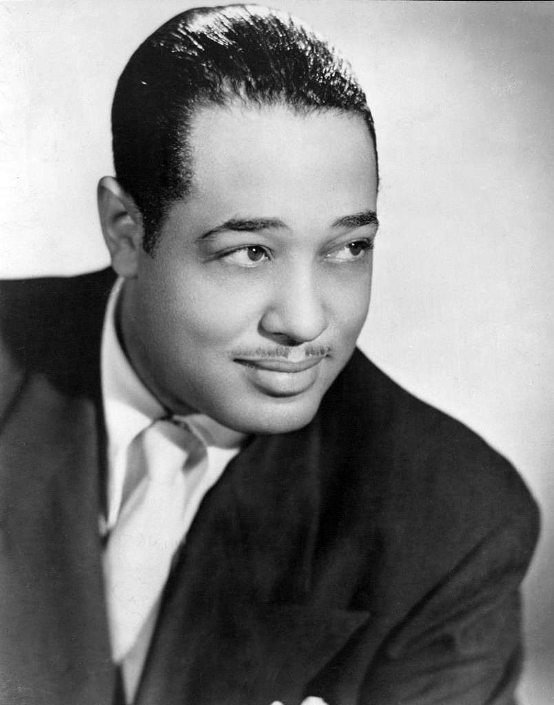

Top 5 Most Underated Jazz Tunes

Jazz Makes me want to boogie woogie, these songs put the "OH MY GOD THATS SUPER COOL" in jazz, I love jazz music, it just makes me want to dance. However people get a bad misconception that all jazz is the same, and it's not.
You have Latin which originated in Spain, Bossa nova is a relaxed style of samba from regions of Brazil.
I'm sure everyone that has listened to jazz music has heard the names of “Duke Ellington","Charlie Parker” and “Count Basie” . These people are some of the pioneers of jazz music across the globe.
Don't get me wrong, their tunes like “Caravan” are super good and recognisable, but what about the lesser known jazz musicians and their songs
I made this blog to show you my top 5 favorite jazz pieces
I secretly dance on the bus to these songs
1. Mambo over the Mountain, by Rick Hirsch-
This song was written by Rick Hirsch and to put it simply, this song just makes me want to dance. It’s an Upbeat Samba and it incorporates solos from the trumpet and a saxophone soli.
Easily one of my favorite
2. Theme From 'Shaft' - Isaac Hayes

This is my favorite oldie but a goodie, any person over 30 has heard this song or even seen the movie Shaft.
Isaac Hayes wrote this piece for the movie “Shaft” and it immediately became a hit, however, over time it got buried by many other great pieces and it deserves to be brought back up.
3. In The Mood - Glenn Miller
This piece was written by Glenn Miller back in the 40’s and this piece revolutionalised jazz as a whole.
This song is one of those songs that you definitely heard just never knew the name of. Let the piece speak for itself
4. Children Of Sanchez - Chuck Mangione
This piece was written by Chuck Mangieone back in the 70’s.
This piece is a more latin adventurous piece, but halfway through its gets all light like a feather and back to heavier latin feel.
This piece is phenomenal
Overall Rankings
- Mambo over the Mountain
- Theme from Shaft
- In the Mood
- Children of Sanchez
Closing
Music, especially jazz is super underrated and I would 100% recommend listening to more older jazz.
You don't need to agree with me but these are some of the best jazz tunes to exist and they all capture different key elements of jazz as whole.

Sources
- https://www.google.com/goto?url=CAESYwHrOzAVtuftgkzaBPyiLNT2KjlacXRzx5eZA6KF_JaoCRwBqP7VKa1CrXakCbYRqzNX5jThjIuRdxGy389rH_RaQtP7w82qfCv71wx9BR-rWmmVj2XtokJ3WsNZwojhJwe4mg
- https://www.google.com/goto?url=CAESYwHrOzAVvY8fjAkKiDJqOHEVvLspNbt6sQVo1FYY3Yi5IgABaf_iezYFznq1sifTiScpqUK44wMu2OygxwmCik0B2mXmyi2rkgpEwE8KucduBr_bir1PrcbI5K8RnhA-n6N75g
- https://www.google.com/goto?url=CAESYwHrOzAVUruM5uR7UE9T64AK6_pgVKzpIcZ3a-_bu0zet4WAJeh-QUD5Dhl1AB2O4I98rZsfJfLuGoFK3Ko6IBmZnd3RD-IISotFQ7H7YZRktThwjEB0Te7liiQNUk9GK45RWg
- https://www.youtube.com/watch?v=glqjOvpnidg&list=RDglqjOvpnidg&start_radio=1&pp=ygUXbWFtYm8gb3ZlciB0aGUgbW91bnRhaW6gBwE%3D